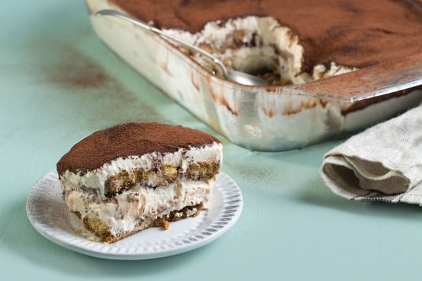
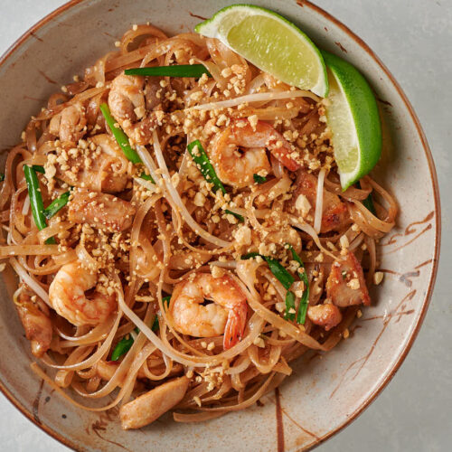

Coding Chef
Lets Code some great meals!
My name is Lynn. I'm a home chef and a Coder! Food is art & recipes are like algorithms to the most wonderful dishes.
Featured Projects
View selected projects below. More information can be found at christinatruong.com.
Classic Tiramisù
A creamy dessert of espresso-soaked ladyfingers surrounded by lightly sweetened whipped cream and a rich mascarpone.
Continue ReadingMy Suggestions
Recipes selected throughout the week by me to you!
Easy, Peasy, Weeknight Noodles
There’s a world of fast, easy, flavorful noodle dishes beyond Italian pasta.
Pad Thai
Pad Thai is essentially a stir-fry and requires little more than chopping and stirring. It comes together in less than a half-hour. Some ingredients in this recipe may be unfamiliar.
ingredients
- 4 ounces fettuccine-width rice stick noodles
- ¼ cup peanut oil
- 1 to 4 tablespoons tamarind paste
- ¼ cup fish sauce (nam pla)
- ⅓ cup honey
- 2 tablespoons rice vinegar
- ½ teaspoon red pepper flakes, or to taste
- ¼ cup chopped scallions
- 1 garlic clove, minced
- 2 eggs
- 1 small head Napa cabbage, shredded (about 4 cups)
- 1 cup mung bean sprouts
- ½ pound peeled shrimp, pressed tofu or a combination
- ½ cup roasted peanuts, chopped
- ¼ cup chopped fresh cilantro
- 2 limes, quartered
Prepartion
Put noodles in a large bowl and add boiling water to cover. Let sit until noodles are just tender; check every 5 minutes or so to make sure they do not get too soft. Drain, drizzle with one tablespoon peanut oil to keep from sticking and set aside. Meanwhile, put 1 tablespoon tamarind paste, fish sauce, honey and vinegar in a small saucepan over medium-low heat and bring just to a simmer. Taste and add more tamarind paste if desired. It should be piquant, but not unpleasantly sour. Stir in red pepper flakes and set aside. Put remaining 3 tablespoons oil in a large skillet over medium-high heat; when oil shimmers, add scallions and garlic and cook for about a minute. Add eggs to pan; once they begin to set, scramble them until just done. Add cabbage and bean sprouts and continue to cook until cabbage begins to wilt, then add shrimp or tofu (or both). When shrimp begin to turn pink and tofu begins to brown, add drained noodles to pan along with sauce. Toss everything together to coat with tamarind sauce and combine well. When noodles are warmed through, serve, sprinkling each dish with peanuts and garnishing with cilantro and lime wedges.